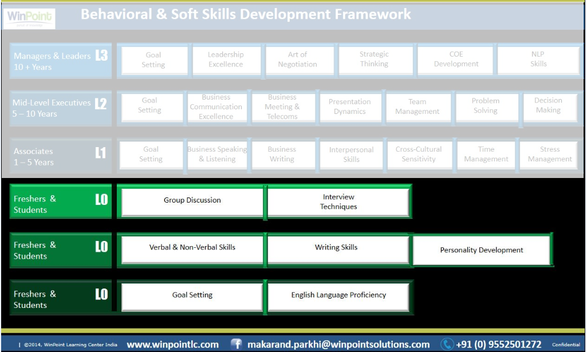
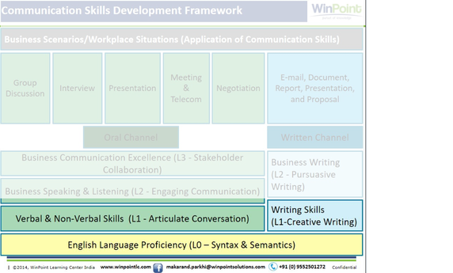

Institute - Technology Institute (IT Stream) - Behavioral Module
However much the Career role of the students may be technical in nature, they still need to interact with people (e.g. client, manager, team members etc), discuss in groups, write compelling e-mails, and work collaboratively in teams. This necessitates the possession of their behavioral skills (apart from hard skills) that will help them fast-track their career growth on the technology track.
Our offerings:
- English Grammar Foundation
- Writing Proficiency
- Verbal Proficiency
- Personality Development

